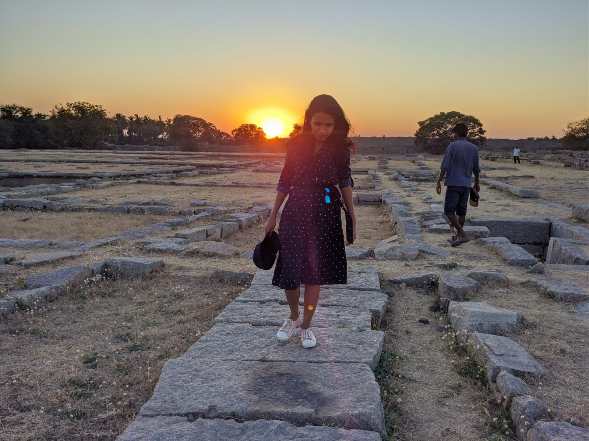
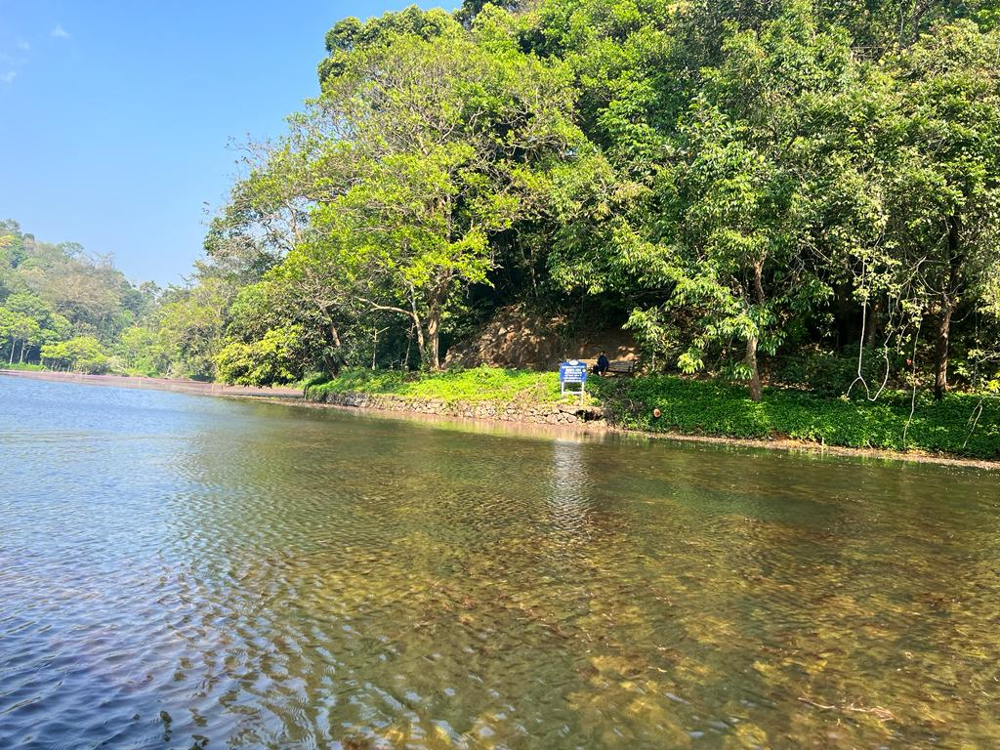

TOPIC
Hey there! I'm from this small village in Kerala, India, where everything is just so green. I'm always taking pictures of what's around me. Just imagine waking up to the sounds of birds singing and leaves rustling in the morning breeze. As I walk around, I see these traditional houses with colorful flowers and fabrics, giving a lively vibe to the whole green landscape. Coconut palms are all over the place, swaying against the clear blue sky. The air smells like jasmine and that earthy scent after a good rain. And there are these paddy fields, where the rice plants reflect this intense green in the water. It's such a Kerala thing, you know? I often find myself near streams and ponds, with water lilies adding a touch of elegance to the whole scene. And in the evenings, the sunset turns the sky into this amazing mix of orange, pink, and purple. As it gets dark, the village comes to life with lanterns and the buzzing of insects. It's just so peaceful and beautiful. I love taking pictures of these moments, each photo telling the story of the natural wonders in my village.
MY COLLECTION
Lost in the symphony of nature's hues. 🌿 Exploring the vibrant greens of my Kerala village, where every leaf tells a story. 🍃 Nature's canvas painted with serenity. 🌳 Join me on a visual journey through the lush tapestry of tranquility. 📸 #NatureInFocus #KeralaGreenery
Golden whispers of the sun bidding farewell to the day, casting a warm glow over the tranquil paddy fields. The rippling water mirrors the fiery hues, creating a serene dance of reflections.

Reflecting serenity in every ripple, the lake whispers stories of tranquility. Nature's mirror, where the sky meets its watery counterpart. A tranquil escape embracing the timeless dance of water and horizon. 🌅🌊 #LakeLife #NatureBeauty
